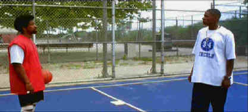

Touchstone/1998/136m/WS 1.85
Lee peoples his movie with a variety of characters, most of whom are looking to profit from prodigy basketball star Jesus Shuttlesworth. College coaches looking to lure him to their schools, his high school coach trying to take advantage of his loyalty, his family looking to share in the potential financial windfall. It’s a veritable circus with Jesus the main event. But the most interesting relationship is between Jesus and his father Jake, as played by Denzel Washington.
 |
Father and son on opposite sides of the screen.©Touchstone |
Washington and
Spike Lee are a top-notch team in their third film together. I suppose Washington is the
actor every director would like to draft for his next project, but Lee does right by him.
This time Denzel does not dominate the screen the way he did in Malcolm X, but
supplies the fuel for the story to find heart. Denzel plays Jake Shuttlesworth, the
estranged father of high school superstar Jesus. Jake, serving time for the accidental
manslaughter of his wife, gets a chance to reduce his sentence if he can convince Jesus to
select the Governor’s favorite school as the platform for his basketball heroics.
Jake must find a way to break through to his son in the few short days before he must
declare his decision as to what school he will attend. Jake taught the tough lessons of
the basketball court to his son, unmercilously pushing him to excel, but the relationship
between father and son suffered the consequences. Now together they must explore that
relationship and find out what it all means in a one on one game of school yard
basketball.
Ray Allen, a forward for the Milwaukee Bucks of the NBA has the
tough chore of bringing Jesus to life, and this he does with the ease of an uncontested
slam dunk. Playing on the same court with the likes of Denzel Washington, the basketball
player is never intimidated. Others providing able support to He Got Game are Bill Nunn as
the hungry uncle, Milla Jovovich as a strung out prostitute, and Jim Brown as a
tough parole officer.
The photography soars like basketball players floating to the
basket on an interminable drive, suspending for a millisecond, stretching it, embellishing
it with another dimension of beauty. Again, the love of the game shines through time and
again. The montage work set to the classical compositions of Aaron Copeland merge
spendidly with the images. One could believe these contemporary American works were
written for the film. Even Farefare for a Common Man rises unexpectedly from the
score selection adding inspiration to the many inspired moments in He Got Game.
Lee’s vision is transferred to DVD quite nicely.
The bright hued colors are lively and tightly controlled. Images are mostly sharp in
various lighting conditions. In the red light district where the senior Shuttlesworth
spends his nights in his brief sojourn from prison, the dominant soft red lighting looks
very good. The music lacks some of the power that I have experienced listening to the
music of Copeland on a high end stereo system. Farfare’s horns are slightly reserved
and the kettle drums don’t quite fill the space the way one might hope for. But it is
a rare treat to have this music accompanying a film and the surround system is actively
used to impart space and air around the music.
 ã1998
Stuart J. Kobak , all rights reserved.
ã1998
Stuart J. Kobak , all rights reserved.